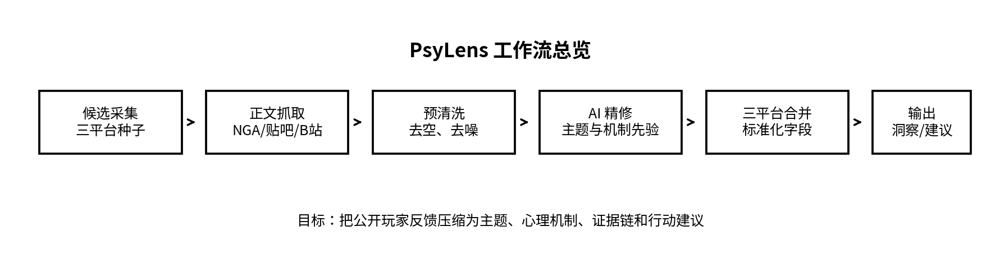
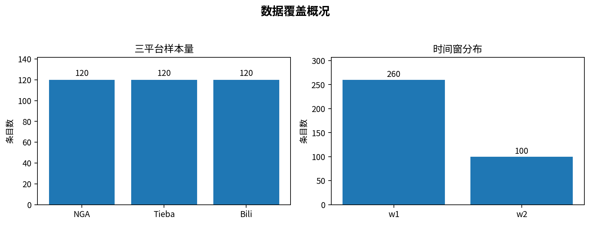
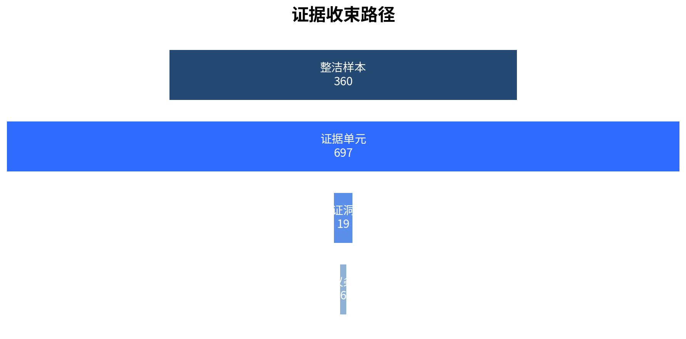
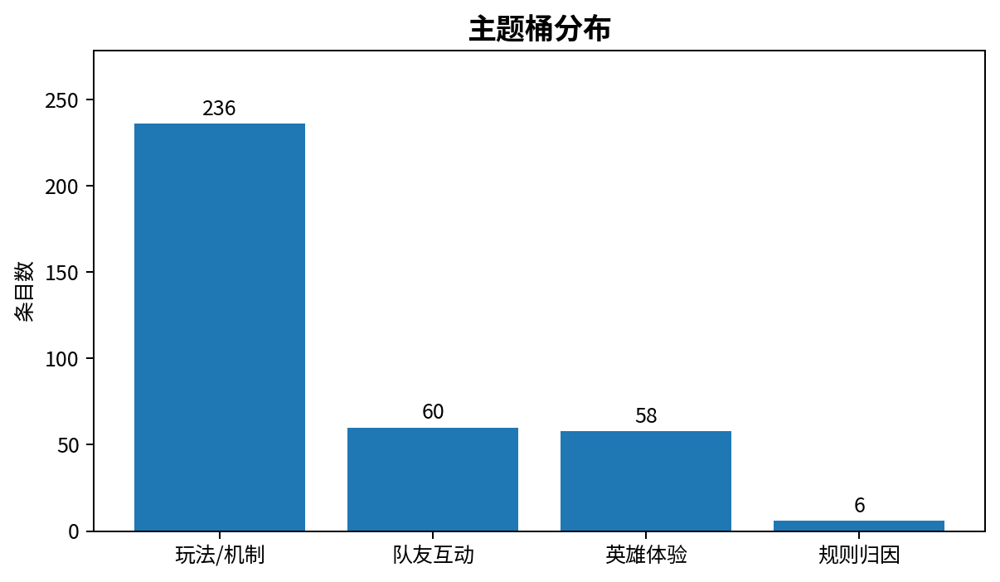
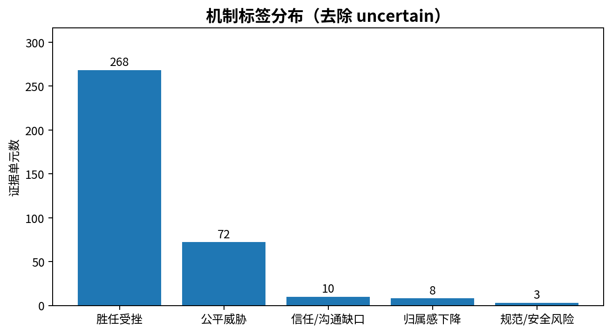
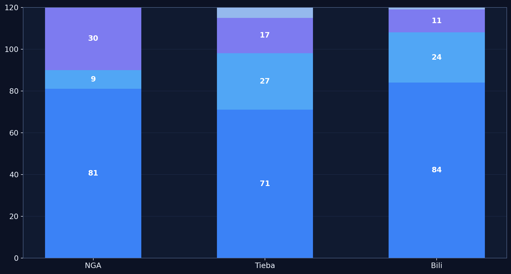
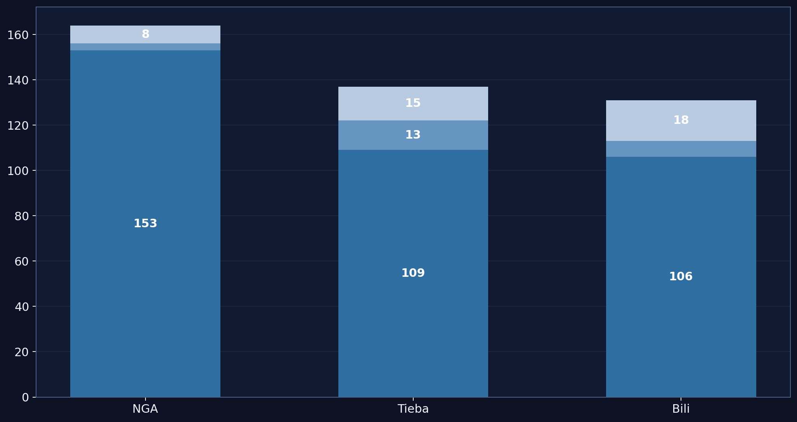
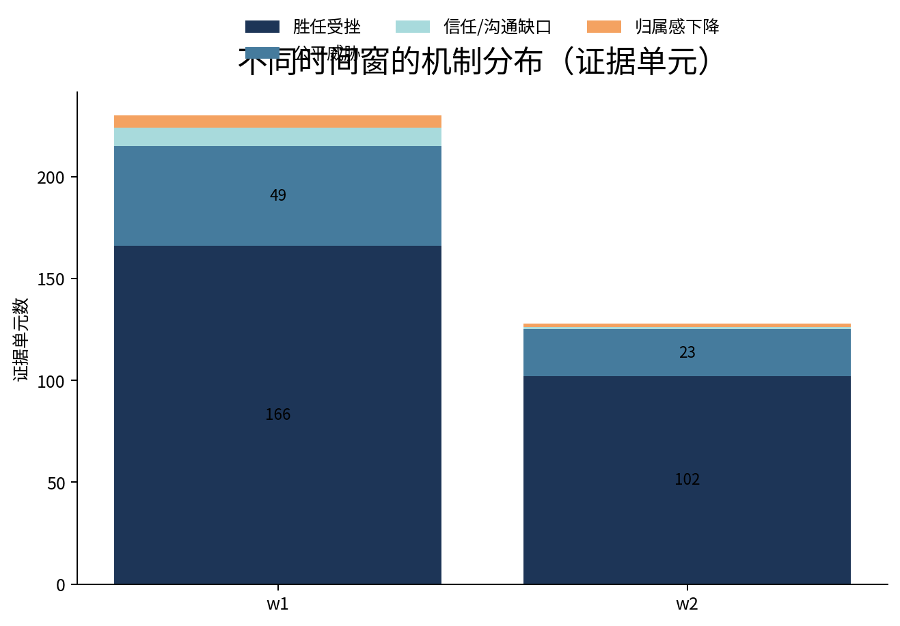
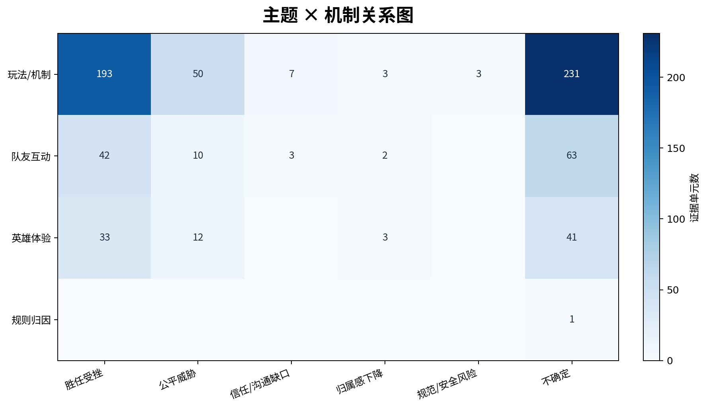

问题从哪里开始
海克斯大乱斗从来不缺热闹。论坛里有人长篇复盘，贴吧里有人拍桌子，视频评论区里几句话就能把一整局的不适感点透。 评论区像一锅滚开的水，热度很足，结论很少。真正难的，是分清这些声音究竟在围着什么旋转。
玩家嘴里说的是英雄、海克斯、匹配、奖励、队友和节奏；往里再走一步，事情就开始分层。 有的抱怨落在规则节点，有的卡在理解成本，有的则是一局接一局累起来的失控感。 把它们全部归进“玩家觉得不公平”，很省事，也很容易错过真正扎手的部分。
这份案例做的事很朴素：把评论里的热气散一散，看看留下来的骨架是什么。 页面关心的，并非情绪本身有多高，而是这些情绪究竟落向哪类体验问题，又朝哪种心理机制收束。
理论视角
页面把“胜任受挫”放在中心，不是为了词更学术，而是因为它更贴近玩家的手感。
为什么会先看到胜任感的裂缝
自我决定理论把胜任感看作持续投入的重要条件。放到游戏里，玩家追的不只是输赢， 还追一种非常具体的确认：我看得懂局势，我知道自己在做什么，我的判断和操作会有回声。
三个平台里最常出现的句子，常常长成这样：“越玩越迷”“根本不知道赢点在哪”“动作很多，心里却没底”。 这些表达把问题推向了一个很清楚的方向——掌控感在松动，胜任感在下坠。
公平威胁与社区摩擦的位置
匹配、奖励和部分规则归因，仍会把公平威胁拉上桌；它是这套解释链里的重要支线。 队友归因、沟通风格和情绪传染，则更像扩音器：原本已经扎人的挫败，被它们再推高一层。
于是，页面里保留了三层解释：胜任受挫承接主轴，公平威胁承接局部节点，社区/沟通张力解释放大过程。 这套结构比简单的“玩家生气了”多走了几步，也更接近能拿来讨论的问题。
执行流程
从公开评论，到能落进项目包的研究材料。

候选采集 → 正文抓取 → 预清洗 → AI 精修 → 三平台合并 → 洞察与建议输出
候选采集
围绕玩法/机制、队友互动、英雄体验、规则归因四个主题桶，在三个平台建立候选池。
正文抓取
保留论坛正文、热门评论和最新评论，让不同平台各自的语气和节奏都能留下来。
预清洗
去掉空白、过短、纯噪声和明显无关文本，先把地面扫干净，再谈解释。
AI 精修
给文本补上主题先验和机制先验，让后续合并与筛查有稳定抓手。
三平台合并
统一字段，控制样本量，保留时间窗信息，让三个平台能在一张桌子上说话。
结果验证
把证据单元收束成验证洞察，再把洞察压成可沟通的建议矩阵。
数据覆盖与稳健性
当前版本纳入三平台整洁样本 360 条，NGA、贴吧、B站各 120 条。这样安排，不是追求表格上的整齐， 是为了让三种平台语气在同一页上彼此牵制：NGA 更密、更硬，贴吧更容易带出互动氛围，B站则把视频语境下的英雄体验和评论节奏带了进来。
时间窗上同时保留近期窗口与历史对照窗口。这样做，结论就不至于悬在某一个情绪高点上。 如果某个判断只在短时间里成立，它大概率只是热；如果它隔着平台和时间窗还在反复出现，那才是值得留下来的东西。
三平台样本与时间窗分布

平台数量控制住了，时间窗也留下来了。页面里的结论因此多了一层耐心，不会被某一周的情绪浪头轻易带走。
证据收束路径
结论不是空降下来的，它沿着一条可回查的路径一点点收紧。

从样本到洞察的四次压缩
页面里的结论没有从一大团评论里一步跳出来。三平台整洁样本先构成入口，再拆成证据单元； 证据单元汇成验证洞察，洞察再收成建议层级。每往下一层，数量变少，结构更清楚，解释也更稳。
这条链最有价值的地方，在于它给“为什么相信这个结论”留了路。读者看到的不只是最后一句判断， 还能回头找到它压缩、筛选和收束的痕迹。
核心发现
玩法/机制撑起了主轴
三平台讨论最密集的部分，一直围着玩法理解和模式逻辑打转。英雄与海克斯，是这些争议最常见的切口。
胜任受挫压住了主机制
“看不懂”“没手感”“努力没有回声”在文本里一遍遍出现，最后把结论推到同一个方向：玩家的胜任感在持续失血。
公平威胁仍然重要
匹配、奖励和局部规则节点会清楚地拉起公平威胁，这条支线不能忽略，只是它撑不起整张地图。
社区冲突负责放大声音
贴吧和 B站里的互动语境显示，沟通风格、队友归因和情绪传染会继续推高原本已经存在的不适。
结果图表
这些图不只负责报数，它们还负责解释结构、比较平台、检验结论的站姿是否稳当。
主题桶分布

玩法/机制占据最高比重，队友互动与英雄体验构成第二层结构。页面里的争议重心，更靠近对局体验本身，而不是抽象规则条文。
机制先验分布

胜任受挫明显高于公平威胁和社区/沟通张力。玩家更常提到的，还是看不懂、抓不住、打不出回声。
三平台主题结构对比

NGA 更擅长把玩法/机制争议摊开来讲，贴吧把互动摩擦带得更明显，B站则让英雄体验和视频语境一起上桌。
三平台机制先验结构对比

胜任受挫在三平台内部都占据更高位置。平台说法各不相同，落点却朝一个方向汇拢，这正是页面最有分量的地方之一。
时间窗 × 机制先验分布

w1 与 w2 的比例会变，主机制没有翻面。近期窗口让声音更密，历史窗口负责提醒人：有些判断不是一天热起来的。
主题 × 机制关系热力图

这张图把表层争议和心理机制直接挂在一起：玩法/机制最常牵出胜任受挫，规则归因更容易拉起公平威胁，队友互动则把沟通张力推到前台。
项目包与核查入口
关键流程脚本
抓取、清洗、合并、编码与输出的主要脚本都保留在这里，方便顺着流程一路往回看。
项目价值与边界
项目价值
这套流程展示了公开社区反馈如何被整理成可复核、可沟通、可继续扩展的研究材料。 换一个游戏模式、换一个社区议题、换一类产品评论，它仍然能继续工作。
项目边界
这是一份探索性专题案例。页面不打算替模式写终审意见，关心的是： 当评论区很吵时，能不能把里面稳定的结构、机制落点和证据组织方式清清楚楚地端出来。